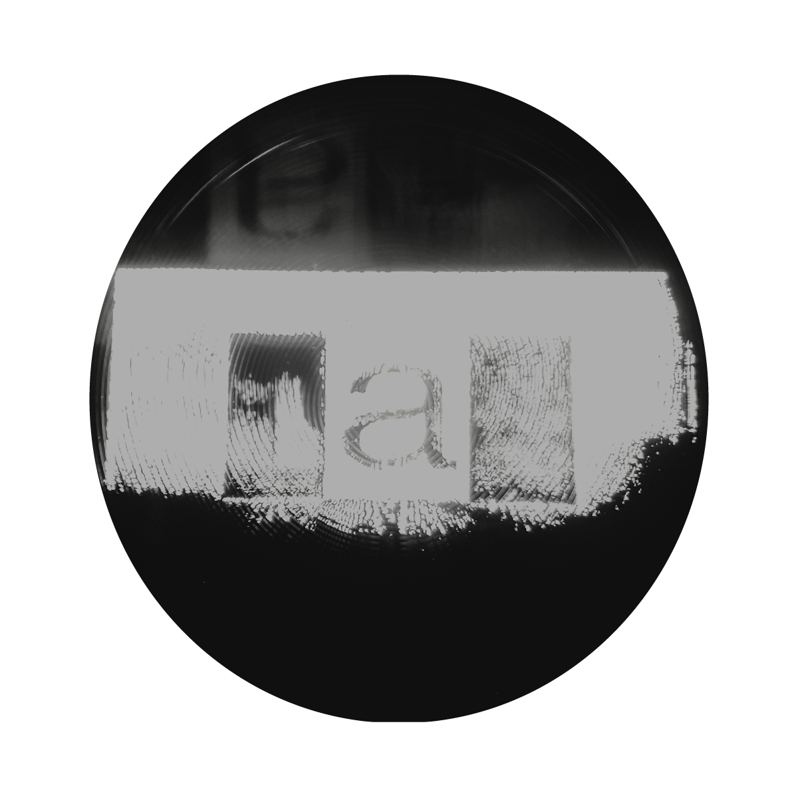

This video captures the inner workings of the projector and its distortions.

The purpose of this project is to investigate the projector and examine its internal system.

Looking directly into a projector lens is impossible for the human eye because of its intense brightness.
Experiment 1

In experiment 1 the exposure of the white background was too bright for the projector to register the image. To combat this I made the image black and white.

When we peer through the lense, we see a reflection of our image.The projector is a system of mirrors.

What occurs when an image is fed back into the projector from within its own system?
It becomes unclear, unrecognizable.

Almost as if the projector is unwinding itself.
As I feed the projector the same image over and over it begins to reveal another layer.

The more distorted the image grows the more I can see the frame of the lense. Where we can no longer see the image, the machine presents itself.

This experimentation was a series. In different stages I worked with color, size, and surface area of the projection.
Experiment 2
In experiment 2 I wanted to investigate the effect of color on the image.
Now the projection is white on black.
Now the projection is white on black.
Now we are able to see these waves and rings of light.

Just like the end stages of experiment one the lens comes back into view.
In the furthest stage of this experiment the letter "A" is blown out beyond legibility.